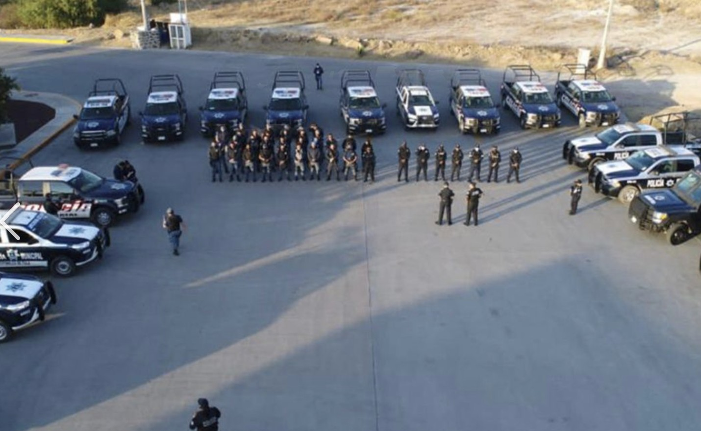
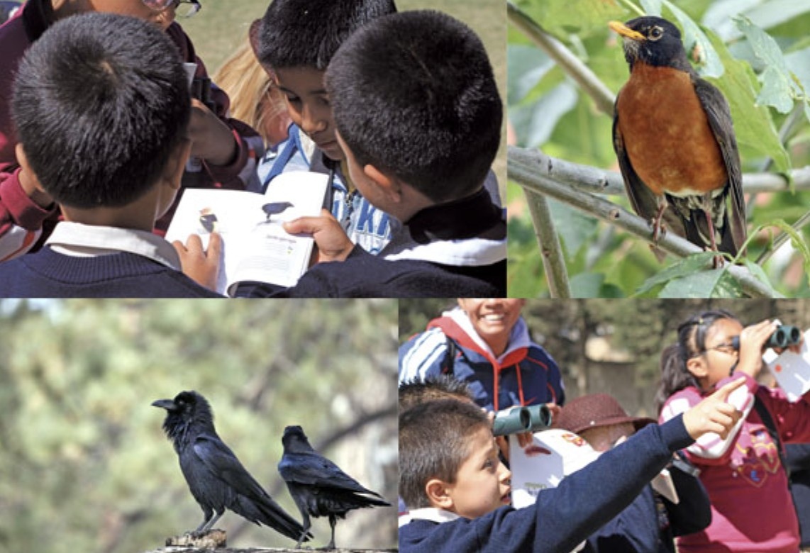

Brigadas y Patrullajes Colectivos
Organizamos y capacitamos a comités de vigilancia comunitaria participativa en conjunto con los ejidos locales. Estas brigadas recorren los puntos críticos de las selvas y bosques mexicanos para detectar trampas, disuadir a cazadores ilegales y resguardar los nidos y madrigueras de las especies vulnerables.
El apoyo directo a los brigadistas locales asegura que las Áreas Naturales Protegidas cuenten con ojos vigilantes los 365 días del año, actuando de manera coordinada con las autoridades federales ante cualquier delito ambiental.
Monitoreo con Cámaras Trampa
Implementamos sistemas de monitoreo biológico mediante cámaras ocultas activadas por movimiento. Esta herramienta nos permite registrar el estado de las poblaciones de jaguares, ocelotes y tapires sin alterar su comportamiento natural, además de vigilar los accesos no autorizados a las reservas.
Los datos obtenidos sirven para diseñar mapas de riesgo e identificar las rutas más propensas al tráfico y la caza furtiva, optimizando el despliegue de las brigadas de protección ciudadana.

Educación y Concientización Comunitaria
Fomentamos talleres educativos en escuelas rurales y centros comunitarios para sensibilizar sobre el valor ecológico de la fauna nativa. Buscamos erradicar las conductas de consumo de carne de monte o la posesión de aves exóticas como mascotas, transformando la relación de la población con su entorno.
Crear alternativas económicas viables como el ecoturismo y el monitoreo comunitario permite que los habitantes locales se conviertan en los principales guardianes y defensores de su biodiversidad.